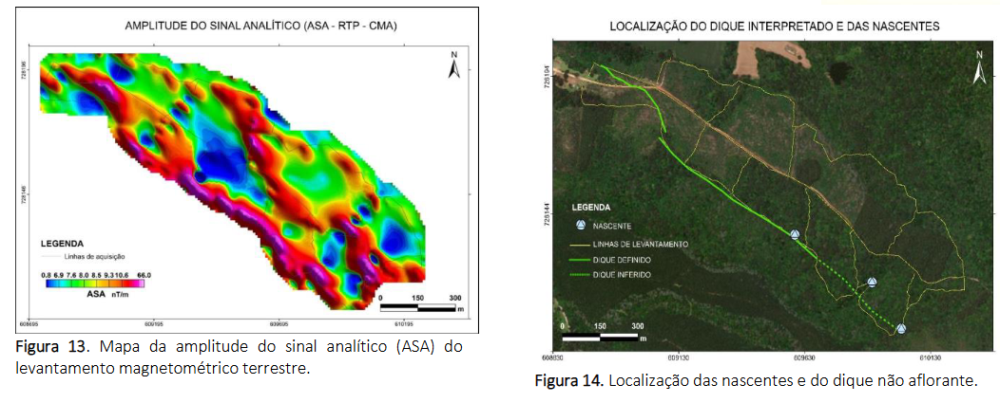

COMPARAÇÃO DE DADOS MAGNETOMÉTRICOS AÉREOS E TERRESTRES PARA O MAPEAMENTO GEOFÍSICO ESTRUTURAL NA FLORESTA NACIONAL DE PIRAÍ DO SUL/PR

Resumo em Português
Os levantamentos magnetométricos são amplamente aplicados na investigação de feições geológicas, como diques, falhas e contatos geológicos. O presente trabalho tem por objetivo comparar dados magnetométricos obtidos em levantamentos terrestres, na Floresta Nacional de Piraí do Sul (FLONA), com dados aéreos disponíveis em literatura. Os dados de magnetometria terrestre foram adquiridos durante esse trabalho, ao longo de 14 linhas. Os dois levantamentos se mostraram eficientes para o reconhecimento de diques não aflorantes, bem como para indicar a presença de falhas e contatos geológicos. O levantamento magnetométrico aéreo foi importante para uma abordagem inicial e resultou em um campo magnético anômalo (CMA) com variação de -29,2 a 370,3 nT. A partir do CMA foi realizada a redução ao polo (RTP) e então aplicados outros quatro filtros: amplitude do sinal analítico (ASA), gradiente horizontal total (GHT), inclinação do sinal analítico (ISA) e inclinação do sinal analítico do gradiente horizontal total (ISA-GHT). Como resultado, os dados filtrados exibem a tendência regional de direção NW-SE dos diques na região, possíveis falhas e contatos geológicos que posteriormente foram confirmados com os dados de campo. Apesar das diferentes escalas de trabalho de ambos os dados, a interpretação de anomalias magnéticas dos dois levantamentos utilizados representa o mesmo contexto geológico, entretanto com detalhamento e resolução diferentes. Adicionalmente, durante a campanha de magnetometria terrestre, a observação das variações de solo e de litologia foram essenciais para confirmar a indicação feita do contato entre as unidades de rochas graníticas e quartzíticas na porção sudoeste da área e identificação de nascentes na área de estudo.